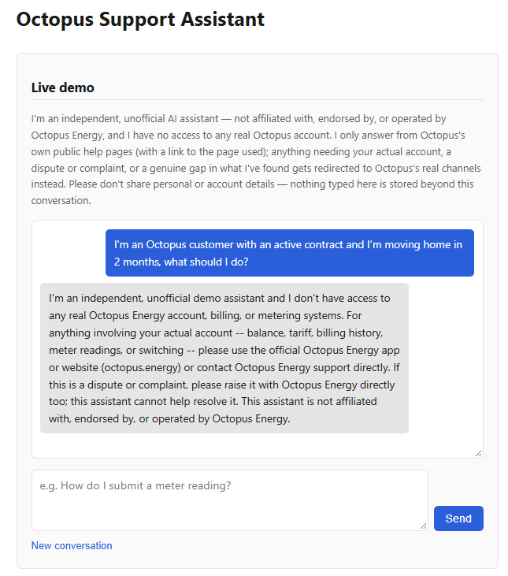

Octopus Support Assistant
Problem
Most "AI customer support" demos fail in one of two directions: they fabricate a plausible-sounding answer when they don't actually know something, or they quietly step outside what they're actually allowed to do. Both are easy to hide in a demo and expensive in production. I wanted to build the opposite — an assistant that only ever answers from content it can point to, and that treats certain topics, anything needing a real account or a genuine dispute, as permanent boundaries to redirect around rather than obstacles to talk its way past.
Octopus Energy customer support was the right test case because it has exactly the shape that makes this hard to fake: a large public help-page library worth genuinely grounding answers in, real account-specific actions (balance, meter readings, switching) that a demo has no business touching, and a way to actually measure whether a boundary holds under pressure — including a customer trying to talk the assistant out of its own rules.
Approach
Like the tariff advisor, this is a dependency-light Python core (core.py) with
zero knowledge of any interface, so the same logic sits behind a CLI and this public web
chat without duplication. The design problem here is different, though: instead of one
recommendation engine, handle_message() has to make a judgment call on every
single message — can the fetched Octopus help pages actually answer this, does it
need a real account, is it a dispute, or is it just off-topic? I made that classification an
explicit, separate step with its own forced tool-use call, specifically so it can't be left
for the answer-drafting prompt to decide implicitly halfway through generating a reply.
Grounding is enforced the same structural way: the model can only cite a URL that was
actually fetched this run, checked against the real fetch list afterwards, so a hallucinated
citation isn't just discouraged by the prompt — it's impossible.
The parts that don't show up in a first cut: a two-pass redaction pipeline (patterns for emails, phone numbers, postcodes and reference numbers, then a small model call for identifying detail written as prose) that runs on anything before it reaches a log; and a real decision about what "logging a gap" should even mean. Account-specific and dispute redirects are permanent boundaries, not failures to fix, so they're never logged anywhere. A genuine content gap — a real Octopus question the fetched pages don't cover — gets redacted and filed as a Jira issue for review. I originally asked for a new Jira project for that; partway through I changed my mind and had it redirected into the existing PRD-to-Jira project's own dedicated escalation sprint instead, so all of this tool's write activity in Jira stays visibly scoped to one place rather than spawning a project nobody would think to check.
For the web chat, I asked for the same real token-usage guardrails the tariff advisor has
— a persisted daily budget, both global and per-visitor, plus a rate limit — so
visitors testing the demo couldn't run up real spend. core.handle_message()
doesn't stream text the way the tariff advisor's tool-use loop does (it's a single opaque
call that can make up to three model calls internally), so instead of token-by-token
streaming, the backend reports real usage back through a callback and reconciles it against
the budget after every request, and the widget shows one "thinking" status while the reply
is generated rather than watching words appear.
Approach — step by step
- I wrote the full functional spec myself before any code, and asked for Plan Mode twice. Exactly which topics redirect, how classification should work, what redaction has to catch, where content gaps get logged — all specified up front, then scoped in Plan Mode and approved before a file was touched, once for the core assistant and again for the web chat that followed.
- I resolved the one real ambiguity my own spec left open. Should an off-topic message (not a genuine Octopus question) get logged as a "content gap" the same as a real one? I decided no — it isn't a gap in Octopus's help content, and logging it would just spam the tracker with noise.
- I redirected the Jira integration mid-build. The original plan was a new Jira project; once Claude Code found there was no way to create one through the connected Atlassian tools, I decided against a new project entirely and pointed it at the existing shared project's own escalation sprint instead.
- I made every credential and account call myself. Generated the Anthropic API key — twice, after the first one was silently blocked at Cloudflare's edge, which took real debugging to diagnose as a leaked-credential block rather than a simple bad key — created the Jira API token, and made every Render deployment decision.
- I asked for live verification, not a green test suite alone. Once deployed, I had Claude Code drive the actual production widget in a real browser, which is what caught a genuine classification bug the offline test suite structurally couldn't have: a real phrasing the live model handled wrong.
- I scoped this page deliberately. I chose to keep this session to the working demo and ask for this write-up as a separate, later pass, rather than have everything land in one sitting.
Claude Code capabilities used
- Plan Mode — scoped twice: once for the classification/grounding/redaction/Jira design, once again for the web chat backend, both approved before any file was touched.
- The in-app browser — used before writing any fetch/parse code to read the real octopus.energy help pages and confirm the actual URL structure and server-rendered HTML rather than assuming it; used again after deployment to drive the real, live widget end-to-end and catch a classification bug that only showed up talking to the real model.
- AskUserQuestion — surfaced the off-topic-logging ambiguity, the Jira-project blocker, and the case-study page's scope as explicit decisions rather than guessing at any of them.
- Subagents (Explore, Plan) — researched the sibling tariff-advisor project's conventions and drafted the retrieval/classification/redaction architecture for review before any implementation began.
- Direct debugging with real tools — diagnosed a Cloudflare-level credential block by comparing it against a deliberately invalid key's different failure mode, traced a "Jira returned HTML instead of JSON" bug to a misconfigured site URL, and found a Jira sprint-verification race condition by checking the issue directly against the Jira API rather than assuming the code was wrong.
- Atlassian MCP tools — queried the real Jira project's boards, sprints and issue-type schema directly to build
core.py's REST integration against real constraints instead of guesses, and verified, issue by issue, that live-logged content gaps were correctly redacted and actually landed in the right sprint.
![Architecture diagram of the live web chat demo: you ask a question in the chat widget on this page, which calls a web chat server hosted on Render. The server enforces guardrails and calls core.py, which always classifies the message first, then either fetches Octopus Energy's public help pages and asks Claude to draft a grounded answer, or returns a fixed redirect for account-specific or dispute topics. When neither applies, that is a genuine content gap and the redacted question is logged to Jira.](../images/octopus-support-assistant-architecture.svg)
Outcome
- A working, publicly hosted support agent embedded live on this page, sharing the exact same core logic across the CLI and the web chat — no classification, grounding, or redaction logic duplicated between them.
- A grounding guarantee that's structural, not just prompted: every citation the assistant gives is checked against the pages it actually fetched that run, so a hallucinated URL is impossible, not just discouraged.
- Three real bugs found and fixed through actual testing rather than left to be discovered later — a regex that could leak part of a meter reference instead of fully redacting it, a dependency-injection gap that would have made "offline" tests silently hit the real network, and a Jira sprint-verification race condition — each locked in with its own regression test. A fourth, found live in the browser against the real deployed model: a classification prompt that let "how do I submit a meter reading" slip through as answerable instead of redirected, fixed with concrete worked examples once abstract prompt wording alone didn't hold.
Repository
